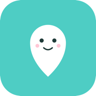
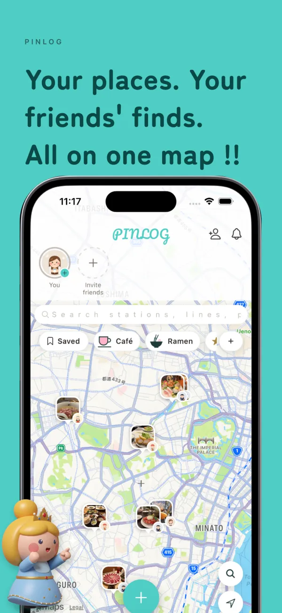
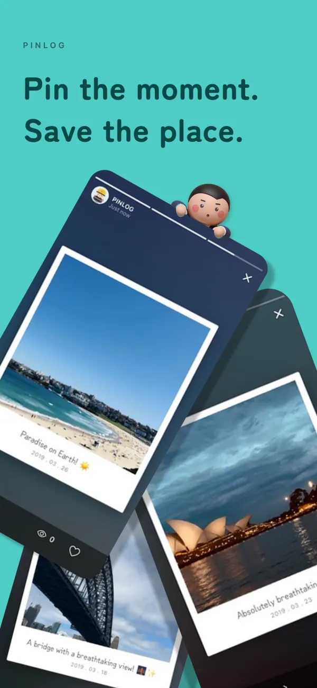
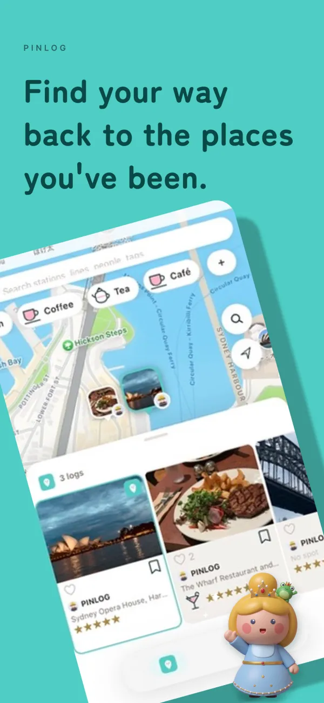
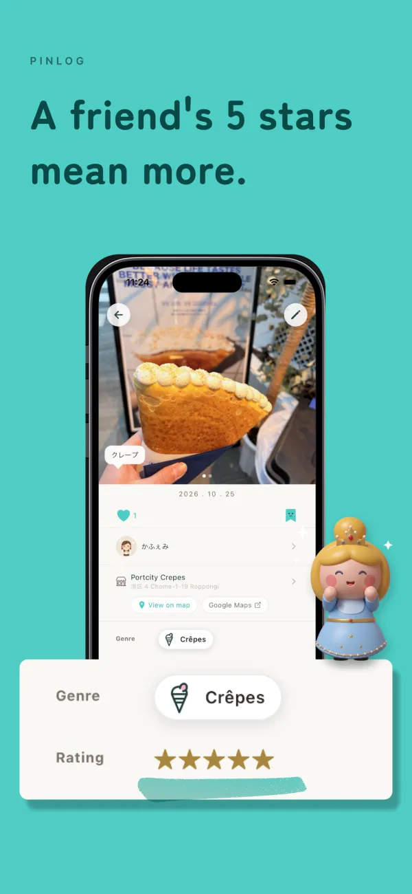
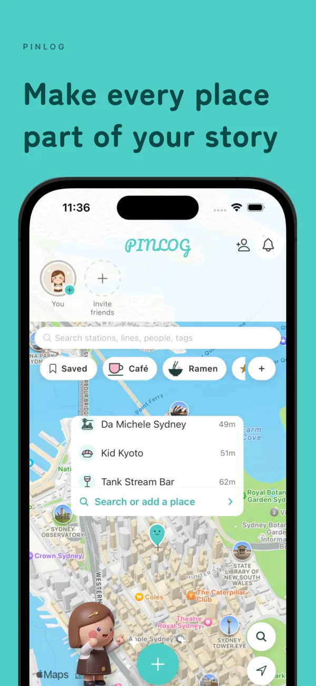

PINLOGYour friends' favourite places,
all on one map
A private map shared only with people you know
Scan with your iPhone camera





← Swipe →

PINLOGA private map shared only with people you know
Scan with your iPhone camera





← Swipe →